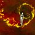
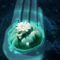

40 jours — 25
Fichiers conservés de la collection Metaflash.
Ouvrir l’imageFichiers conservés
40jours/25.jpg

Informations du fichier
- Nom conservé
- 3128cc1e93cebd4981dc82b244dfdaa748e5f6fba9134cb3f7b29fca758531ea.jpg
- Taille
- 1,844 octets
- SHA-256
- 3128cc1e93cebd4981dc82b244dfdaa748e5f6fba9134cb3f7b29fca758531ea
Provenance dans la sauvegarde Metaflash :
- 40jours/25.jpg (3128cc1e93cebd4981dc82b244dfdaa748e5f6fba9134cb3f7b29fca758531ea)
40jours/25c.jpg


Informations du fichier
- Nom conservé
- bf37c8f8e43e3e309bfae39061bfd2ea458985ec557866ecf56a1b2d5f68033c.jpg
- Taille
- 3,173 octets
- SHA-256
- bf37c8f8e43e3e309bfae39061bfd2ea458985ec557866ecf56a1b2d5f68033c
Provenance dans la sauvegarde Metaflash :
- 40jours/25c.jpg (bf37c8f8e43e3e309bfae39061bfd2ea458985ec557866ecf56a1b2d5f68033c)
40jours/25d.jpg


Informations du fichier
- Nom conservé
- 59f4d3736fec12a5d81a29863dc0ebb9a3f9115414d5ac3a9659bcbacc37d9da.jpg
- Taille
- 3,640 octets
- SHA-256
- 59f4d3736fec12a5d81a29863dc0ebb9a3f9115414d5ac3a9659bcbacc37d9da
Provenance dans la sauvegarde Metaflash :
- 40jours/25d.jpg (59f4d3736fec12a5d81a29863dc0ebb9a3f9115414d5ac3a9659bcbacc37d9da)